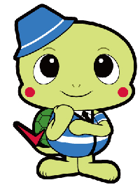
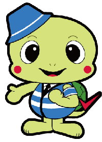

ドライブガイド


行き先・目的地を運転中に忘れる
中央線・センターラインの不注意がある
車庫・枠入れの失敗
道路標識・信号機の理解の低下
速度制限の認識・速度の維持能力の低下
交通環境への注意力維持の低下
運転操作（アクセル・ブレーキ・ギア操作など）能力の低下
自動車メンテナンス（ガソリン・オイルなど）把握・管理能力の低下
他の交通者（歩行者・自転車など）への注意維持の低下
車間距離の維持能力の低下
アクセルとブレーキを間違えることがある。
曲がる際にウィンカーを出し忘れることがある。
反対車線を走ってしまった（走りそうになった）。
合流が苦手、あるいは怖くなった
右折時に対向車の速度と距離の感覚がつかみにくくなった。
気が付くと自分が先頭を走っていて、後ろに車列が連なっていることがよくある。
車間距離を一定に保つことが難しくなった。
高速道路を利用することが怖く（苦手に）なった。
合流が怖く（苦手に）なった。
車庫入れで壁やフェンスに車体をこすることが増えた。
駐車場所のラインや、枠内に合わせて車を停めることが難しくなった。
日時を間違えて目的地に行くことが多くなった。
急発進や急ブレーキ、急ハンドルなど、運転が荒くなった（と言われるようになった）
交差点での右左折時に歩行者や自転車が急に現れて驚くことが多くなった。
運転している時にミスをしたり危険な目にあったりすると頭の中が真っ白になる。
好きだったドライブに行く回数が減った。
同乗者と会話しながらの運転が難しくなった。
以前ほど車の汚れが気にならず、あまり洗車をしなくなった。
運転自体に興味がなくなった。
運転すると妙に疲れるようになった。